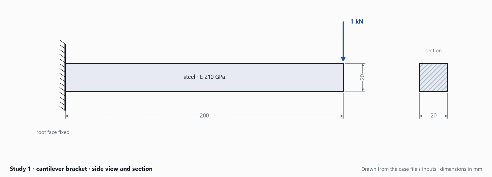
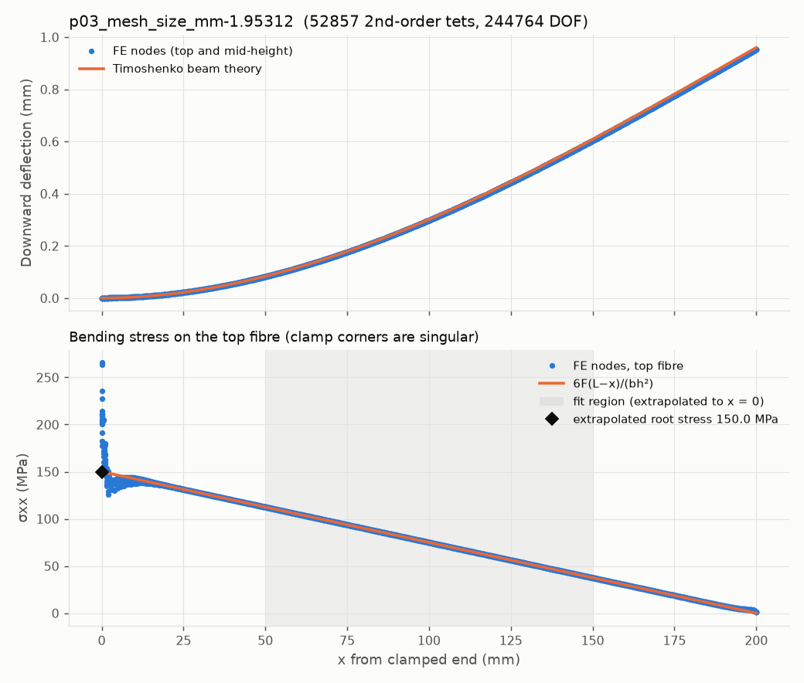
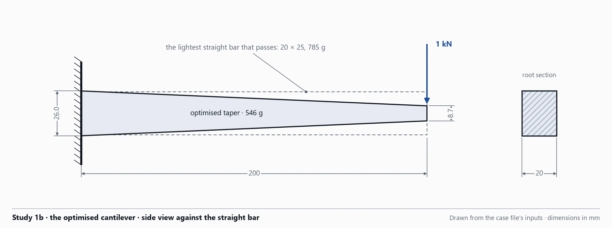

Cantilever bracket, 3D finite elements
The question
A steel bracket, 200 mm long and 20 × 20 mm in section, is clamped at one end and takes a 1 kN load at the tip. Does it stay under 1.0 mm of deflection and 213 MPa of stress, and how far can I trust the model?
The answer
Yes, with room to spare. The tip moves 0.953 mm against a 1.0 mm limit, and the bending stress at the root is 150 MPa against 213 MPa. The mesh uncertainty is about 0.02 %, so the mesh isn't what decides either number.
Why it matters
A cantilever is about the simplest structural check there is, and that's the point of starting here. Beam theory gives the answer by hand, so any mistake in the chain from geometry to mesh to solver shows up straight away.
It also contains the most common trap in stress analysis. Where the bar meets its support there's a perfectly sharp corner, and the stress a model computes there keeps rising as the mesh gets finer. It never settles on a value. A report that quotes "the maximum stress in the model" is quoting a number that depends on how fine the mesh happened to be. Knowing which numbers from a model can be held against a requirement, and which can't, is what this study is about.
The model
- Part
- A straight steel bar, 200 mm long with a 20 × 20 mm section.
- Material
- Steel, linear elastic: Young's modulus 210 GPa, Poisson's ratio 0.3. The 213 MPa stress limit is the 355 MPa yield strength divided by 1.67.
- Load
- 1 kN downward at the tip, spread evenly over the end face.
- Support
- The whole root face is fixed, an ideal clamp. A real bolted or welded root is softer.
- Mesh
- 10-node (quadratic) tetrahedra at four sizes, from 8 mm down to 1.95 mm, each 1.6 times finer than the last.
- Analysis
- Linear static, small deflection, in CalculiX 2.22. Geometry and setup in FreeCAD, meshing in Gmsh.
- What's reported
- The tip deflection, and the bending stress on the top face extrapolated to the root from the smooth middle of the span.

The case file: recorded assumptions, limits and inputs
This is the study's own record, written before the run and saved with it, in the shorthand of the case file.
Steel cantilever, 200 x 20 x 20 mm, clamped at x = 0, 1000 N downward tip load distributed over the free end face. Mesh refinement (characteristic length 8 -> 1.95 mm, ratio 1.6) with quadratic (10-node) tetrahedra; checks tip stiffness and root bending stress requirements.
Assumptions, and how each is checked
- Linear elastic, isotropic, homogeneous steel (E = 210 GPa, nu = 0.3); checked against yield.
- Small deflections and strains (geometrically linear); checked: tip deflection / L.
- Ideal clamp: all displacements fixed on the x = 0 face (stiffer than a real bolted joint).
- Tip load applied as a uniform traction over the x = L face.
- Root bending stress is evaluated by extrapolating the top-fibre stress from 0.25L-0.75L to x = 0, because the clamp corners are stress singularities (peak FE stress there grows with mesh refinement).
Limits
- Synthetic geometry and load; not a specific part.
- Beam theory is an approximate reference for a 3D clamped solid (L/h = 10): agreement within ~1 % is expected, not exact.
- The max von Mises value is reported for information only; it sits at a singular clamp corner and is mesh-dependent.
- No physical test data.
Inputs
| Input | Value |
|---|---|
| length_mm | 200 |
| width_mm | 20 |
| height_mm | 20 |
| youngs_modulus_MPa | 210000 |
| poisson_ratio | 0.3 |
| yield_strength_MPa | 355 |
| tip_load_N | 1000 |
| mesh_size_mm | 5 |
| element_order | 2nd |
How it works
FreeCAD builds the bar, assigns the material, fixes the root face and applies the load. Gmsh fills the solid with tetrahedral elements, and CalculiX solves for the displacements and stresses. I read the results straight from the solver's output files, and the FreeCAD model is saved with every run so the run can be repeated.
The same model is solved four times on finer and finer meshes. If the answer stops changing as the elements shrink, the mesh isn't deciding it. A standard method, the Grid Convergence Index, turns the last three solutions into an uncertainty figure, which is where the 0.02 % comes from.
For the stress, I don't take the highest value in the model. That value sits in the clamped corner and climbs from 150 to 217 MPa across the four meshes. Instead the stress along the top face is read over the middle half of the span, where it rises in a straight line towards the root, and that line is extended to the root. The result is 150 MPa on every mesh, which is also what beam theory gives.


How I checked it
- Against beam theory. The hand calculation gives 0.952 mm if shear deformation is ignored and 0.960 mm if it's included. The model's 0.953 mm falls between the two, which is where a fully clamped solid bar should land.
- Equilibrium. The support reactions add up to the applied 1 kN, to within rounding.
- Mesh refinement. As the mesh is refined, the answer converges at the rate these elements are designed to give. A rate that's far off, in either direction, would mean something other than the mesh is wrong.
- The stress that's reported. The corner peak is recorded for information and never used for a requirement. The extrapolated bending stress matches beam theory at 150 MPa.
What I caught along the way
- I also ran the study with the simplest element type, linear tetrahedra. The bracket came out 4 to 33 % too stiff and the stress 7 to 45 % too low, so at face value it would have looked comfortably safe. The beam-theory and mesh checks both failed, and none of those results were reported as verified. The run is kept as evidence.

Limits, and what I'd do next
- The clamp is perfectly rigid. A real bolted or welded root gives a little, which adds deflection. The margin on deflection is under 5 %, so the joint's stiffness is the first thing I'd check on a real part.
- Beam theory is an approximate reference for a short, solid bar (ten times longer than it is deep), so agreement within about 1 % is what to expect, not an exact match.
- The geometry, load and limits are made up for the study, and there's no test data.
- The next study on this page takes the same bar and asks the opposite question: under a tighter stress limit, what shape makes it lightest?
Evidence
Run reports, with every check and the saved inputs
The same cantilever, optimised
The question
Take the steel bracket from study 1 (200 mm long, 20 mm wide, 1 kN at the tip) and put it in a vibrating assembly. Now its bending stress is limited to 100 MPa for fatigue, not 213 MPa, and the tip can still move at most 1.0 mm. Study 1's 20 × 20 mm bar reaches 150 MPa at the root, so it no longer passes. The width is fixed by the mounting. Which linear taper, meaning which root and tip heights, makes it as light as possible?
The answer
A 26.0 mm root tapering to 8.7 mm at the tip, at 546 g. The lightest straight bar that meets both limits is 20 × 25 mm and weighs 785 g, so the taper saves 30 %. Stress is the limit that governs, and it peaks partway along the span at 99.5 MPa, not at the root, where it's 88 MPa. The tip moves 0.917 mm, so deflection isn't what sizes it.
Switch between the two results in the viewer at the top of the page. On the same colour scale, most of study 1's straight bar is lightly loaded, while the taper keeps its surface close to the limit along most of the span, so nearly all of the steel is doing work.
The answer holds once mesh error is included. At the optimum, going from 4.5 mm to 2 mm elements moves the peak stress by 0.013 MPa. I had the optimiser work to a 0.5 % margin on each limit, and the converged stress sits 0.49 % under 100 MPa.
Why it matters
Checking one design is the easy half of design work. The harder half is finding a better one, and that means running the model many times with nobody looking at each result. An optimiser will happily exploit any weakness in the model: if a wrong answer looks light and strong, that's the one it will pick. So this study is a test of whether the checks from study 1 are strong enough to run unattended, inside a loop, and still be trusted at the end.
The model
- Part
- A steel bar 200 mm long and 20 mm wide. Its height tapers in a straight line from the root to the tip. Those two heights are what the optimiser chooses.
- Material
- Steel, linear elastic: Young's modulus 210 GPa, Poisson's ratio 0.3, density 7850 kg/m³.
- Load and support
- 1 kN at the tip, spread over the tip face. The root face is fully fixed.
- Limits
- Peak bending stress at most 100 MPa and tip deflection at most 1.0 mm, each with a 0.5 % margin held back for mesh error.
- Mesh
- Quadratic tetrahedra, 3 mm during the search. The chosen design is solved again at 4.5, 3 and 2 mm.
- Optimiser
- COBYLA from SciPy. It needs no gradients and handles limits directly. It starts from a straight 20 × 25 mm bar.
- What's measured
- The mass, the tip deflection, and the peak of the bending stress along the whole span, read from the smooth surface and not from the clamped corner.

The case file: recorded assumptions, limits and inputs
This is the study's own record, written before the run and saved with it, in the shorthand of the case file.
Lightest linearly tapered steel cantilever bracket (200 mm long, 20 mm wide, 1 kN tip load) with tip deflection at most 1.0 mm and peak bending stress at most 100 MPa; COBYLA drives the CadQuery -> Gmsh -> CalculiX pipeline over root and tip height, and every candidate must pass the study's checks.
Assumptions, and how each is checked
- Linear elastic steel (E = 210 GPa, nu = 0.3); checked: peak stress below yield.
- Small deflection; checked: tip deflection / length below 1 %.
- Root face fully fixed (rigid mounting); the clamp-corner stress is singular and is not used as a design stress.
- Tip load applied as a uniform shear traction over the tip face.
- Width fixed at 20 mm by the mounting (synthetic); only the two heights vary, linearly between them.
- Stress allowable 100 MPa (fatigue-rated) and deflection limit 1.0 mm: synthetic.
Limits
- Linear taper only; a curved profile could be lighter still.
- No lateral-torsional buckling check (the bracket is a deep, short cantilever loaded in its stiff plane).
- The stress metric uses the FE stress-to-nominal ratio in the smooth region, extrapolated linearly to the root; the root joint itself (weld, bolts) needs its own assessment.
- Beam theory (deflection and nominal stress) is a model-form reference.
- No physical test data.
Inputs
| Input | Value |
|---|---|
| length_mm | 200 |
| width_mm | 20 |
| root_height_mm | 25 |
| tip_height_mm | 25 |
| youngs_modulus_MPa | 210000 |
| poisson_ratio | 0.3 |
| density_t_per_mm3 | 7.85e-09 |
| tip_load_N | 1000 |
| element_size_mm | 3 |
| yield_strength_MPa | 355 |
How it works
The optimiser proposes a root and tip height. For each candidate the harness builds the solid in CadQuery, meshes it in Gmsh, solves it in CalculiX and runs every check of the study, exactly as it would for any other case. A candidate that fails a check counts as infeasible whatever its numbers say, so a result the checks have rejected can't steer the optimiser. The whole search is one command, and it converged in 32 candidates. Study 12 takes the same loop to a 3D machined part.

Why measuring the stress properly matters
Once the taper is steeper than 2 to 1, the bending stress peaks inside the span and not at the root. An optimiser that only checked the root would have kept thinning the tip and handed back a bracket that fails partway along. The peak right at the clamped corner can't be used either, because it grows without limit as the mesh gets finer, which is the trap from study 1. So the study measures the surface stress against the beam-theory value in the smooth part of the span and takes the peak along the whole length.

How I checked it
- Every candidate goes through the full set of checks. The CAD volume is compared with the exact formula, the applied load and tip area are read back from the mesh, and the reactions have to balance. The tip deflection has to match tapered beam theory, which it does within 0.6 %, and the surface stress has to match the beam-theory stress along the span, within 0.7 % as a fit and 1.5 % point by point.
- A separate mesh study at the optimum. It puts the mesh uncertainty at 0.005 % on the stress and 0.016 % on the deflection, and the requirement is still met with that added.
- An independent optimum. I optimised the same bracket with beam theory alone, using the same limits and margin. It lands at 545.2 g against the finite-element optimum's 546.0 g, a 0.13 % difference, with the heights within 0.7 %.
- Predictions written first. Before running it I wrote down the heights, the mass, which limit would govern and where the stress would peak. They all held.
What I caught along the way
- Candidate 8 took a long step to a 390 g design that deflected 2.7 mm, 1.35 % of the span. That's past the small-deflection limit of a linear analysis, so the checks rejected it, and the optimiser treated it as infeasible and stepped back. The run is kept as evidence.
- The optimiser drives the stress right onto the limit at whatever mesh size it's using, so without a reserve, a finer mesh could tip the answer over. I set the 0.5 % margin before running, and the confirmation mesh study measured the actual error at 0.005 %.
Limits, and what I'd do next
- It's a straight-line taper only. A curved profile would be lighter still.
- The joint at the root (a weld or bolts) needs its own assessment, and there's no lateral-torsional buckling check. The bar is short and deep and loaded in its stiff direction, so that's unlikely to govern, but it isn't shown here.
- The limits and the fixed width are made up for the study, and there's no test data.
- The viewer's render was made from the confirmation run's finest mesh, generated again from its saved CAD file and Gmsh script. It reproduces every node of the saved results.
Evidence
Run reports, with every check and the saved inputs